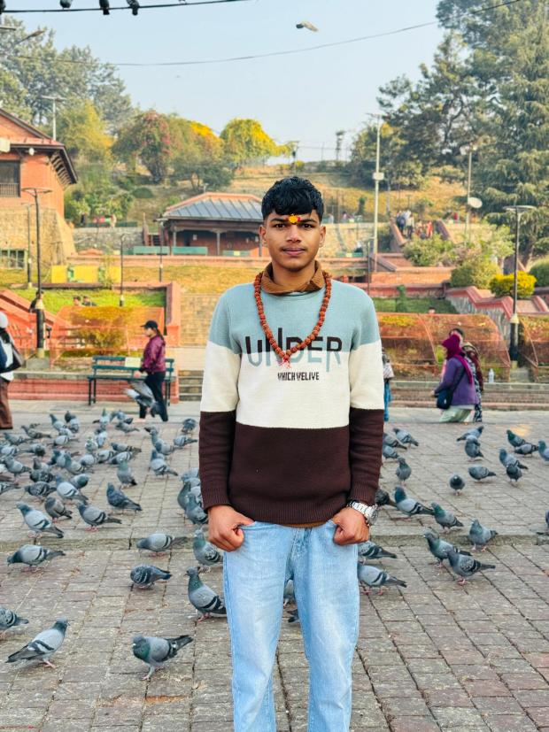
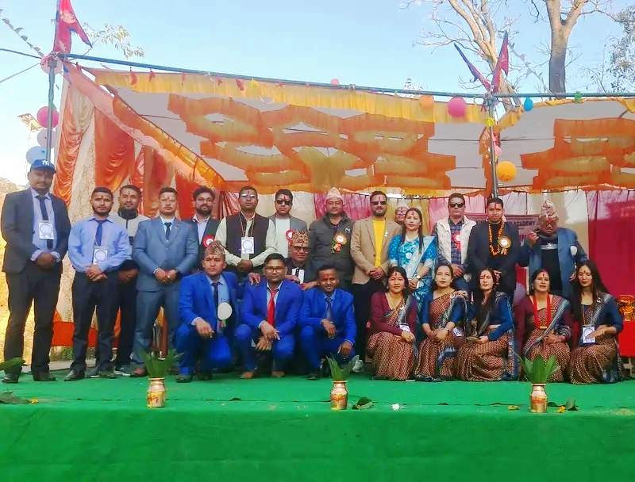
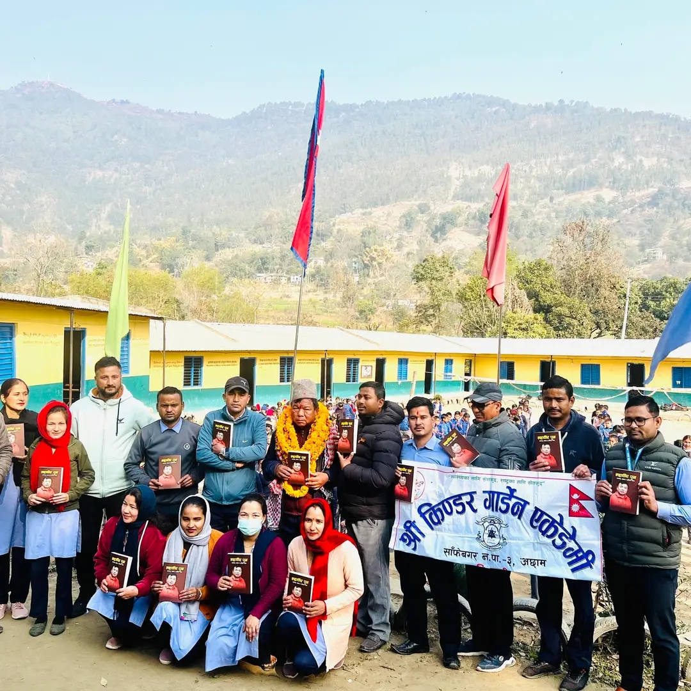
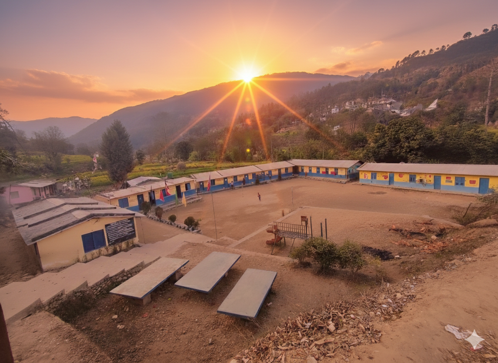

Kinder Garden Academy
Batch 2081

Time passed since we were together in class
Years
Days
Hours
Minutes
Seconds
Kinder Garden Academy
Time passed since we were together in class

Batch 2081 of Kinder Garden Academy was more than just classmates. We shared laughter, friendship and unforgettable memories together. Our classroom became a place where dreams were born and friendships became stronger. These moments will remain forever in our hearts.

Our batch, along with students from grades 8 and 9, embarked on a wonderful educational tour to explore the beauty of Far-Western Nepal. It was a journey filled with laughter, learning, and breathtaking views that we will cherish forever. One of the major highlights was visiting the Dodhara Chandani Bridge. Walking across one of the longest suspension bridges in Nepal over the Mahakali River was a thrilling experience for everyone. We also spent a peaceful time at Tikapur Park, where the beautiful gardens and greenery offered us a perfect spot to relax and take photos.It was one the Unforgettable Memory of our school life.

Our school was more than just a place of study; it was the foundation where our characters and dreams were built. Inside those classrooms, we transitioned from curious children into confident individuals, learning everything from basic literacy to complex life lessons. The unwavering dedication of our teachers provided us with the guidance we needed to navigate the world with intelligence. Even the school playground taught us essential values like teamwork, resilience, and the spirit of healthy competition. The daily morning assembly and strict disciplinary codes instilled in us a sense of responsibility and order that remains with us today. We did not just absorb textbook knowledge; we learned the importance of integrity, ethics, and mutual respect. Every moment spent with friends and mentors shaped our personalities and prepared us to tackle future challenges with courage. Truly, we owe our current success and knowledge to the lessons and experiences we gained within those school walls.
Our last day of school was a day filled with a mix of heavy hearts and beautiful smiles as we realized our journey together was ending. We gathered in our familiar classrooms for the final time, realizing that these hallways would soon become just a memory. We spent the hours hugging friends, sharing laughter, and thanking the teachers who had guided us through every challenge. Every corner of the school reminded us of the countless stories and lessons we had built together over the years. We took final photos and promised to stay in touch, even though we knew our paths were about to diverge. There was a deep sense of gratitude as we looked back at how much we had grown since our very first day. As the final bell rang, we walked out of the gates not just as students, but as a family ready to take on the world.

उहाँ विद्यालयको संस्थापक मात्र नभएर हाम्रो अनुशासनको एक पर्याय हुनुहुन्थ्यो। उहाँ विद्यालयको प्राङ्गणमा छिर्दा मात्रै पनि सबै विद्यार्थीहरूमा एक प्रकारको डर र सन्नाटा छाउँथ्यो। उहाँको व्यक्तित्व यति प्रभावशाली र कडा थियो कि उहाँको उपस्थितिले मात्रै पनि सबैलाई अनुशासित बनाउँथ्यो।

He balanced his responsibilities as the school Principal while ensuring that our Math and Science lessons were never compromised. Even with his busy schedule managing the entire school, he dedicated his full energy to teaching us with precision and care. He explained complex scientific theories and difficult mathematical equations in a way that made them easy to visualize and understand.

उहाँले हामीलाई प्रविधिको संसारसँग निकै रोचक ढंगले परिचित गराउनुभयो। कम्प्युटरका जटिल कोडिङ र सफ्टवेयरका कुराहरूलाई उहाँले प्रयोगात्मक रूपमा धेरै सरल तरिकाले सिकाउनुभयो। कक्षामा पढाउँदा उहाँले सधैं नयाँ-नयाँ प्रविधि र सफ्टवेयरका बारेमा हामीलाई जानकारी दिनुभयो। उहाँले हामीलाई केवल किताबी ज्ञान मात्र दिनुभएन, ल्याबमा बसेर आफ्नै हातले काम गर्न सधैं प्रोत्साहन गर्नुभयो। जब हामीलाई कुनै कुरामा समस्या पर्थ्यो, उहाँले धेरै धैर्यताका साथ हाम्रो गल्ती सुधारिदिनुभयो। उहाँको मार्गदर्शनले गर्दा नै हामीमा डिजिटल सीप र सिर्जनशीलताको विकास भयो। वास्तवमै, उहाँले हामीलाई आधुनिक युगको मागअनुसार दक्ष बनाउन ठूलो योगदान पुर्याउनुभयो।

सुरज सरले हामीलाई ऐच्छिक गणित जस्तो कठिन विषय पनि अत्यन्तै मित्रवत व्यवहारका साथ पढाउनुभयो। गाह्रो भन्दा गाह्रो सूत्र र साध्यहरू बुझाउन उहाँले सरल नेपाली भाषाको प्रयोग गर्नुभयो, जसले गर्दा हामीलाई विषयवस्तु बुझ्न धेरै सजिलो भयो। उहाँले हामीलाई कहिल्यै पनि विद्यार्थीको रूपमा मात्र नहेरी एउटा असल साथीको रूपमा व्यवहार गर्नुभयो। कक्षामा कसैले नबुझ्दा उहाँले कहिल्यै झर्को नमानीकन पटक-पटक बुझाइदिनुभयो। उहाँको रमाइलो शैली र नेपालीमा बुझाउने तरिकाले गर्दा गणितका जटिल समस्याहरू पनि हामीले खेल जस्तै गरी हल गर्यौँ। उहाँले सधैं हामीलाई "तिमीहरूले सक्छौ" भन्दै हौसला दिनुभयो। वास्तवमै, उहाँको सरलता र स्पष्ट बुझाउने क्षमताले गर्दा नै हाम्रो गणितप्रतिको डर हराएर गयो।

He traveled from very far, all the way from Budhakot, every single morning just for us. Even in the early hours of the day, he arrived at school on time, showing his incredible dedication to our education. He worked extremely hard to make sure we understood every English lesson clearly. Despite the long and tiring journey, he always taught us with great energy and enthusiasm. He explained difficult grammar and vocabulary in a way that made learning feel easy and fun. He guided us not only in language but also showed us the value of punctuality and hard work through his own example. Truly, his sacrifice and commitment shaped our future and built our confidence in English.

हाम्रो बाल्यकालमा एक जना यस्तो शिक्षक हुनुहुन्थ्यो, जसको स्वर पूरै विद्यालयमा थर्किन्थ्यो। उहाँले कक्षामा पढाउन सुरु गर्दा उहाँको ठूलो र स्पष्ट स्वरले सबै विद्यार्थीहरूलाई सतर्क बनाउँथ्यो। उहाँको स्वर जति चर्को थियो, उहाँको मन त्यति नै मायालु थियो। उहाँले हामीलाई अक्षरहरू चिन्न र लेख्न धेरै मिहिनेतका साथ सिकाउनुभयो। उहाँको कराउने शैलीले सुरुमा हामीलाई डर लागे पनि, पछि उहाँले हामीलाई कति धेरै माया गर्नुहुन्छ भन्ने कुरा हामीले बुझ्यौँ। उहाँको त्यो प्रभावशाली स्वरले गर्दा नै हामीले पढेका कुराहरू अझैसम्म हाम्रो मानसपटलमा ताजै छन्।

नेपाली सरले हामीलाई नेपाली भाषाको महिमा र व्याकरणको शुद्धताका बारेमा धेरै राम्रोसँग बुझाउनुभयो। कविताका लय र कथाहरूका मर्मलाई यति रोचक ढंगले सुनाउनुभयो कि हामी नेपाली विषयको घण्टी कहिले आउला भनेर सधैं पर्खिरहन्थ्यौँ। उहाँले हामीलाई शब्दहरूको जादु र वाक्यहरूको बनावट मात्र होइन, साहित्यप्रतिको प्रेम पनि सिकाउनुभयो। हाम्रो लेखन शैलीलाई सुधार्न उहाँले सधैं नयाँ-नयाँ शब्दहरू प्रयोग गर्न लगाउनुभयो र हाम्रा साना प्रयासहरूलाई पनि प्रशंसा गर्नुभयो। उहाँले हामीलाई केवल परीक्षाका लागि मात्र नभई, जीवनमा कसरी स्पष्ट र शिष्ट भएर बोल्नुपर्छ भन्ने संस्कार पनि दिनुभयो। उहाँको सरल र स्पष्ट पढाउने शैलीले गर्दा नै हामीले नेपाली साहित्यका गहन कुराहरूलाई पनि सजिलै बुझ्यौँ। वास्तवमै, उहाँले हाम्रो शब्दभण्डार र विचारलाई फराकिलो बनाइदिनुभयो।

उहाँले हामीलाई समाजमा कसरी एकताबद्ध भएर बस्नुपर्छ भन्ने कुरा धेरै राम्रोसँग सिकाउनुभयो। हाम्रो देशको गौरवमय इतिहास र पुर्खाहरूको वीरताका कथाहरू सुनाएर उहाँले हामीलाई सधैं प्रेरित गर्नुभयो। कक्षामा पढाउँदा उहाँले भौगोलिक नक्साहरू मात्र होइन, जीवनका व्यावहारिक पाठहरू पनि बुझाउनुभयो। हाम्रा हरेक साना-ठूला गल्तीहरूलाई सुधार्दै उहाँले हामीलाई सधैं अनुशासनको मार्गमा डोर्याउनुभयो। उहाँले हामीलाई केवल किताबी ज्ञानमा मात्र सीमित नराखेर, सामाजिक उत्तरदायित्व र मानवीय सेवाको भावना पनि जागृत गराउनुभयो। उहाँको सरल स्वभाव र स्पष्ट व्याख्या गर्ने शैलीले गर्दा नै हामीले सामाजिक विषयलाई सजिलै आत्मसात् गर्यौँ। वास्तवमै, उहाँले हाम्रो भविष्य निर्माणका लागि एक बलियो आधार तयार पारिदिनुभयो।

उहाँले हाम्रो विद्यालयमा दुईवटा महत्वपूर्ण जिम्मेवारीहरू धेरै कुशलताका साथ निभाउनुभयो। हाम्रो बाल्यकालमा अक्षर सिकाउने पहिलो गुरुका रूपमा उहाँले हामीलाई निकै माया र धैर्यताका साथ पढाउनुभयो। उहाँले सिकाउनुभएका ती प्रारम्भिक पाठहरूले नै हाम्रो शिक्षाको जग मजबुत बनायो। शिक्षणका साथसाथै उहाँले विद्यालयको लेखापाल (Accountant) को रूपमा सम्पूर्ण आर्थिक हिसाब-किताब पनि धेरै इमानदारीका साथ सम्बहाल्नुभयो। अफिसमा हिसाब मिलाउँदा जति गम्भीर देखिनुहुन्थ्यो, कक्षाकोठामा हामीसँग त्यति नै स्नेही हुनुहुन्थ्यो। उहाँले हामीलाई सधैं अनुशासनमा रहन र आर्थिक पारदर्शिताको महत्वबारे व्यावहारिक ज्ञान दिनुभयो। वास्तवमै, उहाँको बहुआयामिक व्यक्तित्वले विद्यालयको प्रशासन र हाम्रो सिकाइ दुवैलाई राम्रो बनाउनुभयो।

Currently Living: Dhangadhi
College: CCS

Currently Living: Kathmandu
College: Liverpool International College

Currently Living: Achham
College: Surye Chandra Secondary School

Currently Living: Time's International College

Currently Living: Dhangadhi
College: Navajeevan College

Currently Living: Dhangadhi
College: SPA

Currently Living: Kathmandu
College: Aasha College

Currently Living: Kathmandu
College: Goldengate International College
Currently Living: Kathmandu
College: Nobel Academy
Currently Living: Kathmandu
College:

Currently Living: Kathmandu
College:

Currently Living: Kathmandu
College: Madan Bhandari Memorial College
The journey of Batch 2081 at Kinder Garden Academy will always remain one of the most beautiful chapters of our lives. Our teachers guided us and our friends supported us through every moment.







